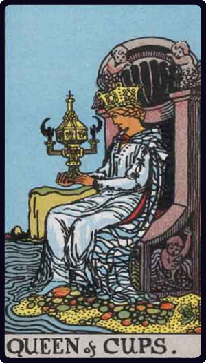

Upright Meaning
Listen with care, trust a well-considered intuitive impression and make room for feelings that need to be understood rather than immediately solved. The Queen's compassion is strongest when it is paired with discernment.
Cups · Emotional wisdom
The Queen of Cups is the court card of emotional attentiveness: she listens closely, notices what is left unsaid and treats feeling as something worth understanding. Her wisdom is not simply being kind. It is the ability to meet emotion with compassion while keeping enough perspective to recognise where another person's experience ends and her own begins. In a reading, she can invite patient listening, creative sensitivity and trust in a considered inner response.

Keywords: empathy, intuition, care
Listen with care, trust a well-considered intuitive impression and make room for feelings that need to be understood rather than immediately solved. The Queen's compassion is strongest when it is paired with discernment.
Sensitivity may have become emotional exhaustion, withdrawal or over-involvement in someone else's difficulties. The reversed Queen asks whether you are absorbing feelings without checking what is yours to carry, or dismissing your own needs while trying to appear supportive.
The Queen of Cups often brings the emotional climate of a situation into view. Ask what is being felt but not openly expressed, whether someone needs understanding rather than advice, and whether compassion is being balanced with clear boundaries. In an advice position, she may encourage a calm conversation or time to reflect before responding. In an outcome position, read her as a quality to cultivate rather than a promise that another person will behave a certain way.
In a relationship reading, the Queen of Cups can point to tenderness, emotional availability and the wish to understand a partner beyond surface words. She may describe a caring listener, a need for reassurance or a relationship in which feelings deserve a safer space to be spoken. Her caution is just as important: empathy should not become mind-reading, rescuing or excusing repeated behaviour that causes harm. Look for reciprocity—are both people making room for each other's feelings?
At work, this Queen can represent emotional intelligence: noticing team morale, listening carefully to a client or colleague, and responding tactfully when a situation is sensitive. In creative work, she can favour imagination and an attentive relationship with the material. She is not a substitute for evidence or planning; pair instinct with practical checks, clear expectations and professional boundaries.
Her lesson in personal growth is to become receptive without becoming overwhelmed. Practise naming your own feeling before responding to someone else's. Give yourself time to distinguish intuition from anxiety, wishful thinking or assumptions. Emotional maturity includes asking for support, saying no and allowing other people to take responsibility for their own choices.
In the Rider–Waite–Smith image, the Queen sits at the water's edge with a distinctive, ornate cup held carefully in both hands. Its closed form invites questions about inner feeling, privacy and the parts of emotion that are not immediately visible. The water nearby suggests a close relationship with feeling, while her composed posture gives that sensitivity a contained, attentive quality. Treat these as interpretive prompts rather than a fixed code: notice what the image suggests to you, then test that impression against the question and spread position.
Pause before offering advice. Identify the feeling that seems most relevant, check whether it belongs to you or someone else, and decide what compassionate response is realistic. You might listen, ask a gentle question, make space for creativity or set a kind boundary. Avoid treating a hunch as proof of another person's thoughts.
The Queen's central skill is emotional receptivity with discernment. She can listen deeply without confusing another person's distress with an instruction to fix it. Her cup is elaborate and closed: a useful image for feelings that deserve attention but may not be ready to be opened or explained. The card asks for patience, not intrusion.
A friend tells you they are struggling and pauses, unsure what to say next. Rather than immediately offering solutions, ask whether they would prefer you to listen or help think through practical options. You can be present without promising more time or energy than you can give.
Reading check: Which part of this example is supported by the question and the surrounding cards, and which part would be an assumption?
Practice question: “How can I understand the emotional side of this situation?” This is a fictional learning prompt. It is deliberately open, so the card can be explored without pretending to know a fixed outcome.
Step 1 — Start with this card's themes: Compassion and emotional insight help you understand what others cannot easily express. The keywords empathy, intuition, care offer a starting point, not a checklist that must all apply at once.
Step 2 — Choose what is relevant: Read the Queen through the specific role she occupies in the spread. A card in the advice position may encourage a compassionate conversation; in a position describing a challenge, it may draw attention to emotional over-involvement or uncertainty about boundaries. The question and position determine which side of her meaning is most relevant. Here, the card speaks most directly to listening and emotional understanding. If it appears in an advice position, the practical suggestion may be to ask an open question and hear the answer without rushing to solve the problem. If it appears in a position describing your own response, it may ask you to notice your feelings before deciding what to do.
Step 3 — Test a different angle: Emotional overload or poor boundaries may be draining you. Even when the card appears upright, its reversed meaning can be a useful contrast: it asks what an unhelpful extreme, obstacle or overlooked perspective might look like. Do not assume a reversal is automatically negative.
Step 4 — Connect it to real circumstances: A grounded response could be: “I can offer a patient conversation and ask what support would be useful, while being honest about what I can manage.” This is within the reader's control. It does not assume the friend secretly feels a particular way or predict how the conversation will end.
Step 5 — Write a grounded response: Complete this sentence in your own words: “The theme I want to pay attention to is ______. One small, sensible thing I can do or find out is ______.” The second blank should be something within your control.
In the Rider–Waite–Smith illustration, the Queen is seated alone beside the water, holding an unusually elaborate cup with both hands. The vessel is closed and shaped almost like a small shrine, setting it apart from the more open cups shown elsewhere in the suit. The image can suggest that inner life is precious, complex and not always immediately accessible. Her attention is directed towards the cup rather than outward towards the viewer, reinforcing the sense of quiet contemplation. The water and shoreline connect her to the emotional world, while the stable throne gives the scene a sense of composure. Read together, these details create a useful contrast: she is close to feeling, but not swept away by it.
The card's central tension is openness versus containment. If the Queen is read only as kindness, the interpretation can miss her discernment; if she is read only as guardedness, it can miss her warmth. Her strongest expression holds both: she is willing to encounter difficult feelings, but she does not need to expose, control or carry every emotion she encounters. In a challenging position, consider emotional fatigue, idealisation, avoidance or blurred boundaries. In a supportive position, consider compassionate listening, imaginative insight and calm emotional presence.
A querent asks, “How can I support someone without becoming overwhelmed?” The Queen of Cups appears in the advice position. A grounded interpretation is to listen attentively, ask what kind of support is wanted and be clear about what help is possible. The card does not establish what the other person feels; it offers the querent a way to approach the conversation with care and self-awareness.
Can I be compassionate without carrying what belongs to someone else? What feeling needs care and what boundary protects it?
Reading discipline: Test this interpretation against the question, position and surrounding cards. It is a reflective possibility, not evidence about another person's feelings or a guaranteed outcome.
Compare this card with another card, save it to your favourites, or record your own interpretation in the journal.